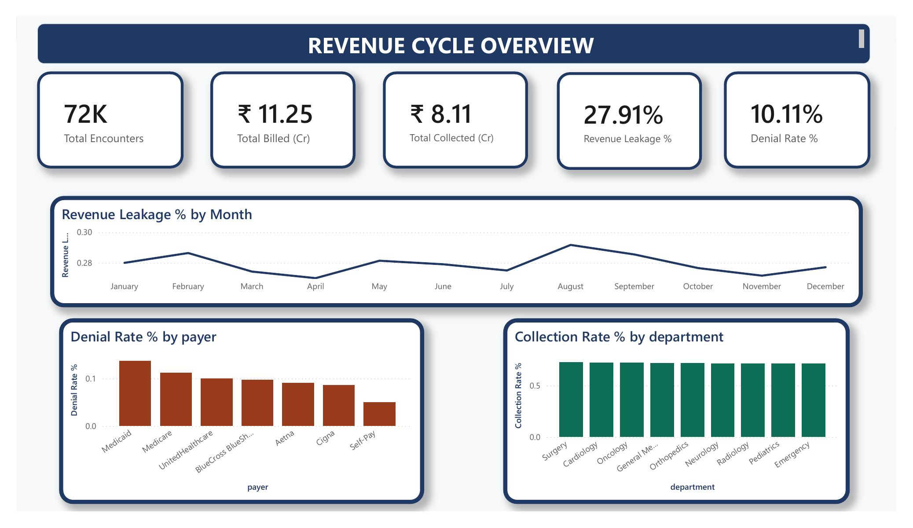
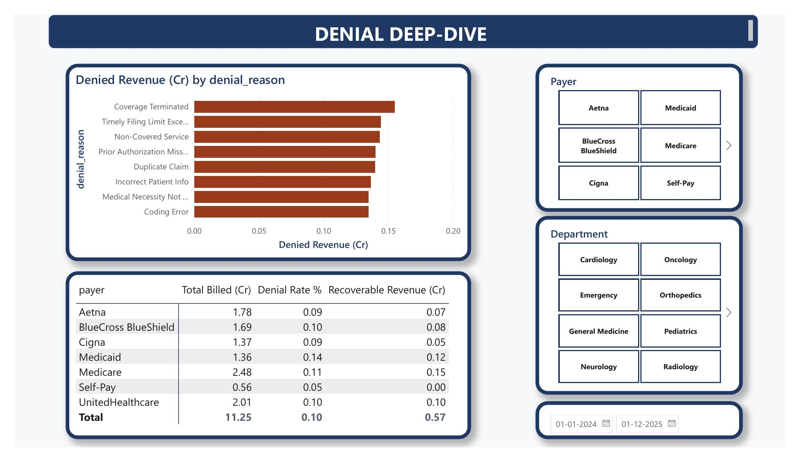

Independent project analyzing a synthetic 72,000-encounter healthcare billing dataset to quantify revenue leakage, denial patterns, and department-level collection performance.
Denial rates vary meaningfully by payer, and the leakage isn't concentrated in one root cause — it's spread fairly evenly across eight distinct reasons, meaning no single process fix eliminates it alone.
If every payer's denial rate matched the best-performing payer, this is the additional revenue that could be recovered — a way to prioritize which payer relationship to focus process improvement on first.
| Payer | Total billed (Rs. Cr) | Denial rate | Est. recoverable (Rs. Cr) |
|---|
Explore the modular layers of this analytical engine. Toggle tabs seamlessly to view dashboard visualizations, core data engineering mutations, or localized query definitions.


import pandas as pd
import numpy as np
# Load synthetic encounter transactions dataset
df = pd.read_csv("healthcare_encounters.csv")
# 1. Compute foundational revenue performance metrics by Payer
payer_pipeline = df.groupby("payer").agg(
total_billed=("billed_amount", "sum"),
total_claims=("claim_id", "count"),
denied_claims=("claim_status", lambda x: (x == "Denied").sum())
).reset_index()
# 2. Evaluate comparative denial rates and locate optimization benchmark target
payer_pipeline["denial_rate"] = (payer_pipeline["denied_claims"] / payer_pipeline["total_claims"]) * 100
best_performing_benchmark = payer_pipeline["denial_rate"].min()
# 3. Model recovery opportunity tracking architecture in Crores
payer_pipeline["total_billed_cr"] = payer_pipeline["total_billed"] / 10000000
payer_pipeline["est_recoverable_cr"] = np.where(
payer_pipeline["denial_rate"] > best_performing_benchmark,
((payer_pipeline["denial_rate"] - best_performing_benchmark) / 100) * payer_pipeline["total_billed_cr"],
0.0
)
# Output normalized strategic priority dataframes
print(payer_pipeline[["payer", "total_billed_cr", "denial_rate", "est_recoverable_cr"]].sort_values(by="est_recoverable_cr", ascending=False))WITH PayerBaseMetrics AS (
SELECT
payer,
SUM(billed_amount) AS total_billed_raw,
SUM(CASE WHEN claim_status = 'Denied' THEN 1 ELSE 0 END) * 100.0 / COUNT(*) AS payer_denial_rate
FROM billing_ledger.patient_encounters
GROUP BY payer
),
BenchmarkTarget AS (
-- Dynamically isolate minimum baseline friction point across networks
SELECT MIN(payer_denial_rate) AS best_performing_rate FROM PayerBaseMetrics
)
SELECT
p.payer,
ROUND(p.total_billed_raw / 10000000.0, 2) AS total_billed_cr,
ROUND(p.payer_denial_rate, 1) AS final_denial_rate,
ROUND(
CASE
WHEN p.payer_denial_rate > b.best_performing_rate
THEN ((p.payer_denial_rate - b.best_performing_rate) / 100.0) * (p.total_billed_raw / 10000000.0)
ELSE 0.0
END, 2
) AS estimated_recoverable_cr
FROM PayerBaseMetrics p
CROSS JOIN BenchmarkTarget b
ORDER BY estimated_recoverable_cr DESC;Built a 72,000-row synthetic encounters dataset (department, payer, billed/allowed/paid amounts, claim status, denial reason) modeled on realistic healthcare revenue-cycle patterns, loaded into SQLite. Wrote SQL using multi-table joins, subqueries, and aggregate functions to compute revenue leakage, denial rates by payer, root-cause revenue impact, and a benchmark-based recovery opportunity estimate. Reproduced and visualized the analysis in Python (pandas + matplotlib), and this dashboard mirrors the same measures I'd build as DAX in Power BI — see the GitHub repo for the full SQL file, Python scripts, and Power BI build guide.